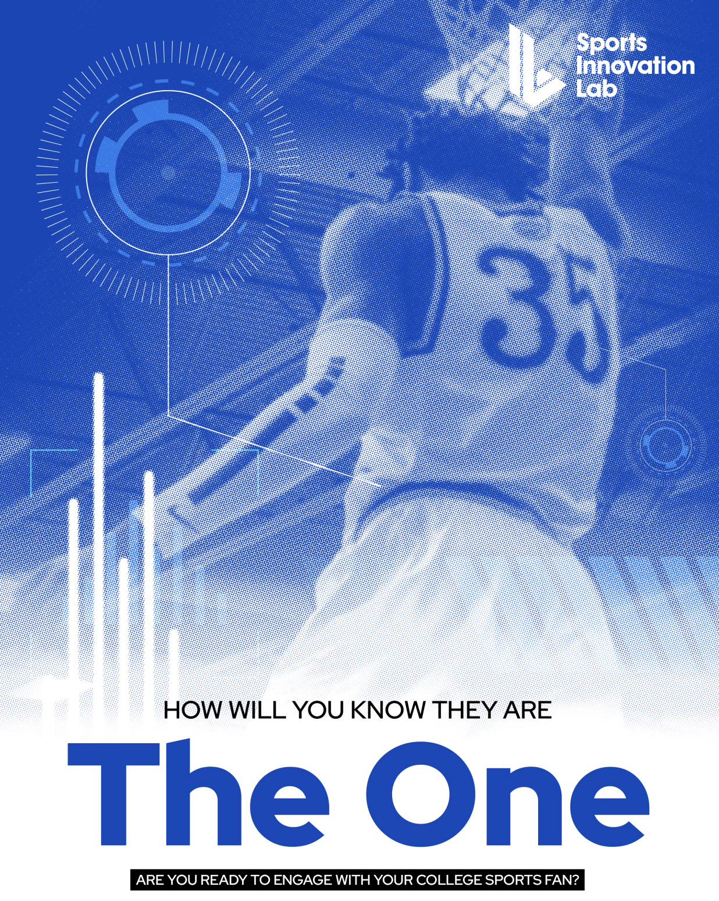
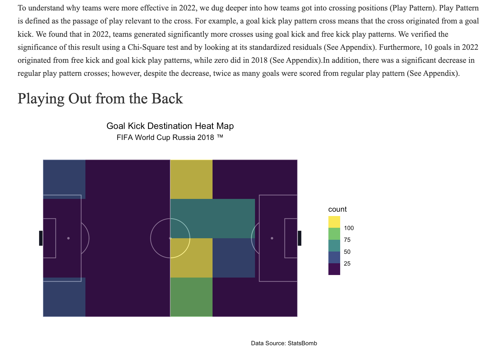
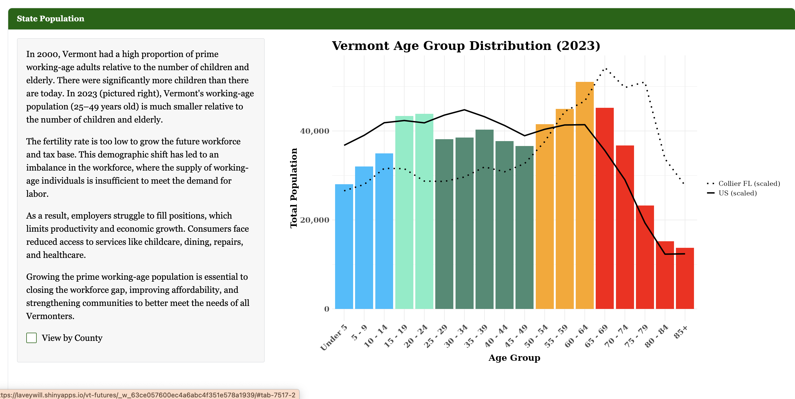

Projects

Sports Innovation Lab Report/h3>
Analyzed demographics and spending behavior of College Sports Fans using Sports Innovation Lab's data cloud and SQL.
Read full report ↗
Analyzing Crossing Efficiency Across FIFA World Cups
Investigated how teams in the 2022 FIFA World Cup became more efficient at scoring from crosses compared to 2018.
View project ↗
Vermont Futures Shiny App
Collaborated on a data visualization dashboard built in R Shiny that highlights insights regarding Vermont's housing crisis.
Launch app ↗